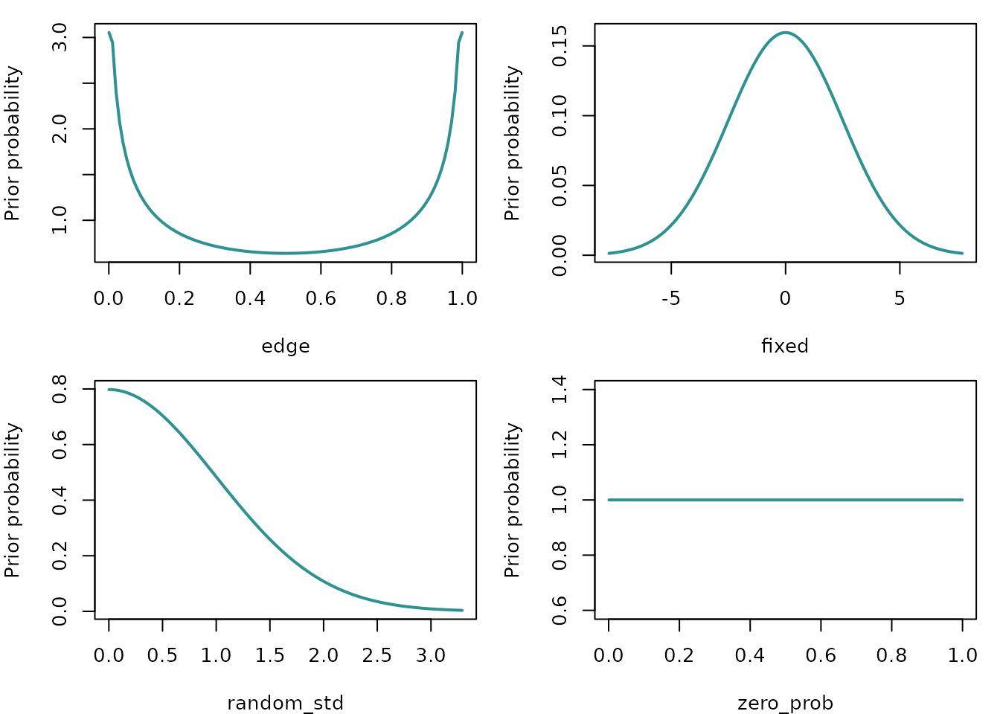
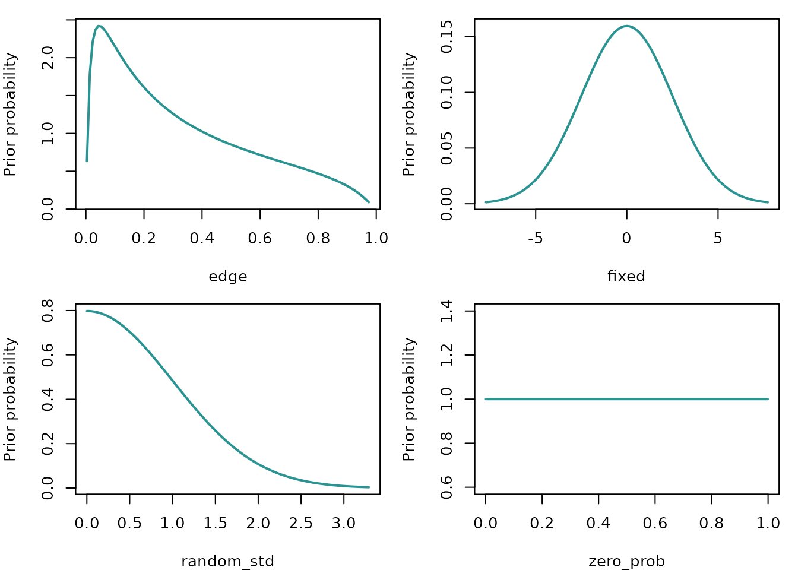
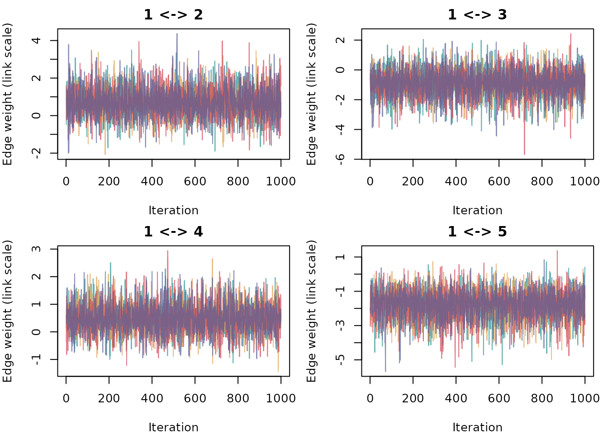
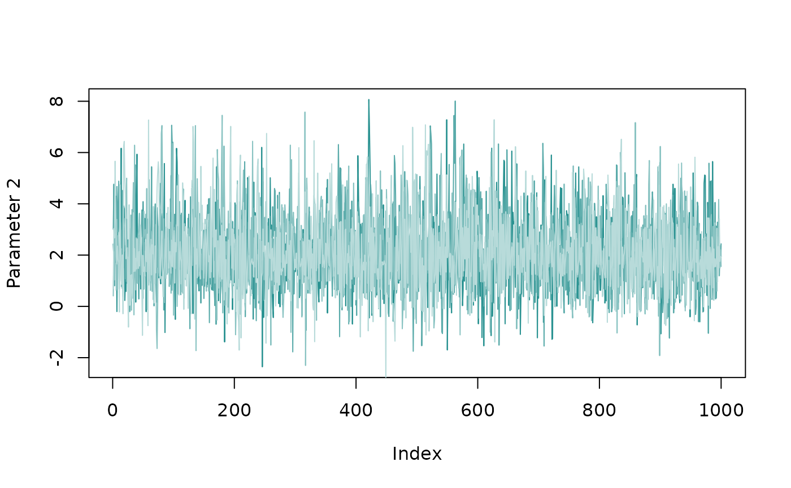
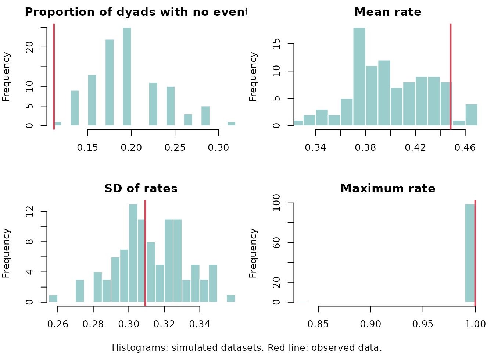
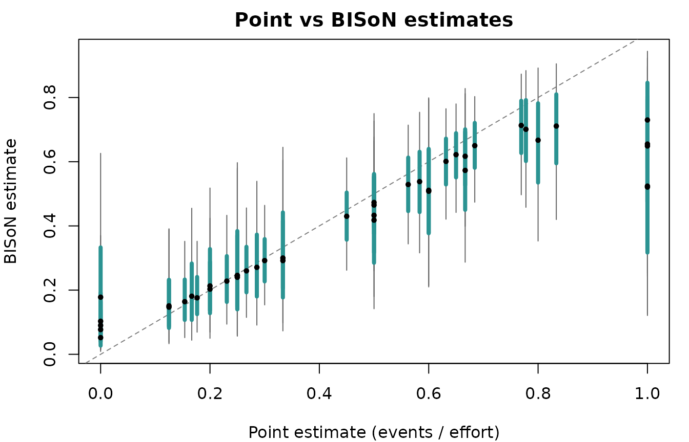
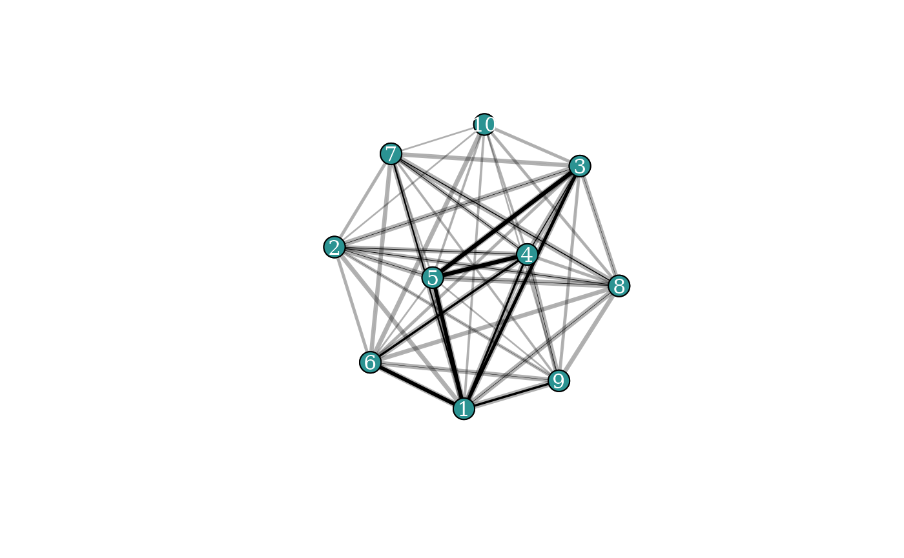
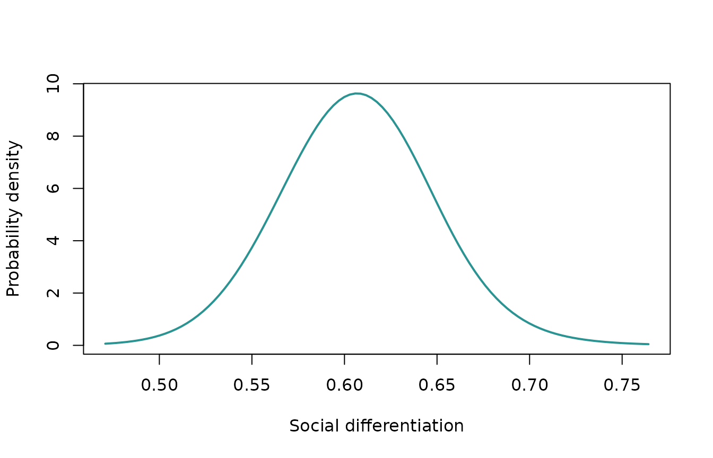

This article goes through a basic BISoN analysis: fitting an edge weight model, checking it, and using the fitted network in regressions and network metrics.
What BISoN does
Social network analyses often start by calculating an edge weight for each pair of individuals (a dyad), such as the proportion of sampling periods in which they were seen together, and then treat these values as known. An edge weight calculated from 2 observations is much less certain than one calculated from 200, and not accounting for this can lead to overconfident conclusions.
BISoN works in two stages:
- An edge weight model estimates the edge weight of each dyad from the observation data, giving a posterior distribution for each edge: the range of plausible edge weights and how probable each one is. Dyads that were observed less have wider posteriors.
- Downstream analyses (regressions, network metrics, comparisons between networks) use posterior draws (values sampled from these distributions), so the uncertainty in the edge weights is included in the results.
The edge weight model is used to estimate the network, not to test hypotheses about it. Hypotheses are tested in the second stage.
Setting up
library(bisonR)
library(dplyr)
#>
#> Attaching package: 'dplyr'
#> The following objects are masked from 'package:stats':
#>
#> filter, lag
#> The following objects are masked from 'package:base':
#>
#> intersect, setdiff, setequal, unionIf you haven’t installed bisonR yet, see the installation instructions.
The data
bisonR works with observation data in a format similar to an edge list: each row describes observations of one dyad. The columns you need are:
-
two node columns naming the individuals in the dyad
(here
node_1_idandnode_2_id); - an event column: the number of social events seen. For binary data this is 1 if the dyad was seen together (or interacting) in a sampling period and 0 otherwise. For count data it is the number of interactions;
- an effort column: how much the dyad was observed, such as the number of sampling periods or the number of hours of observation.
The rows can be disaggregated (one row per sampling period
or observation session) or aggregated (one row per dyad, with
events and effort summed). Any other columns, such as location or
individual traits, can be included and used as predictors. See
vignette("preparing_data") for converting your own data
into this format.
This article uses simulated data from
simulate_bison_model():
sim_data <- simulate_bison_model("binary", aggregated = FALSE, max_obs = 20)
df <- sim_data$df_sim
head(df)
#> node_1_id node_2_id event effort age_diff age_1 age_2 location
#> 1 1 2 1 1 -1.9874477 18.1389 20.12635 5
#> 2 1 2 0 1 -1.9874477 18.1389 20.12635 4
#> 3 1 2 1 1 -1.9874477 18.1389 20.12635 4
#> 4 1 2 1 1 -1.9874477 18.1389 20.12635 4
#> 5 1 2 1 1 -1.9874477 18.1389 20.12635 2
#> 6 1 3 0 1 0.8716649 18.1389 17.26724 1
#> duration
#> 1 1
#> 2 1
#> 3 1
#> 4 1
#> 5 1
#> 6 1Each row is one sampling period for one dyad: event is 1
if the pair were seen together, and effort is the
observation effort for that row (one sampling period). The
duration column is a copy of effort, kept so
that older code still works.
Fitting the edge weight model
Choosing the model type
The type of edge model depends on the type of data:
| Data | model_type |
Edge weight means |
|---|---|---|
| Seen together / not seen together in each sampling period | "binary" |
Probability of being seen together in a sampling period |
| Number of interactions in a period of observation | "count" |
Rate of interactions per unit of effort |
| As above, but only edge weights are needed (no other effects) |
"binary_conjugate", "count_conjugate"
|
As above, calculated exactly and almost instantly |
Priors
BISoN is a Bayesian framework, so each model needs priors:
distributions that describe what is believed about the parameters before
seeing the data. get_default_priors() gives a starting
point:
priors <- get_default_priors("binary")
priors
#> $edge
#> [1] "normal(0, 2.5)"
#>
#> $fixed
#> [1] "normal(0, 2.5)"
#>
#> $random_std
#> [1] "half-normal(1)"
#>
#> $zero_prob
#> [1] "beta(1, 1)"Edge weights in binary models are estimated on the logit scale, as
log-odds, where 0 corresponds to a probability of 0.5. So
normal(0, 2.5) is a distribution over log-odds.
prior_check() shows what the priors imply on the natural
scale (probabilities):
prior_check(priors, "binary")
The default edge prior puts a lot of weight near 0 and 1. If most dyads are expected to associate rarely, a prior with more weight on lower probabilities may be more appropriate:
priors$edge <- "normal(-1, 1.5)"
prior_check(priors, "binary")
Priors should be chosen for the study system, and the defaults checked before use.
The formula
Edge models are specified with a formula, like those used by
lm() and brms:
(event | effort) ~ dyad(node_1_id, node_2_id)- The left-hand side,
(event | effort), gives the event and effort columns. - The right-hand side gives the terms in the model.
dyad(node_1_id, node_2_id)estimates an edge weight for each dyad.
Other effects can be added to the right-hand side to account for
factors that affect how often social events are observed. For example,
+ location adds a fixed effect (a separate estimate for
each location) and + (1 | location) adds a random effect
(location estimates drawn from a shared distribution). With these
effects included, the edge weights represent each dyad’s tendency to
associate after controlling for them.
Fit the model with bison_model():
fit_edge <- bison_model(
(event | effort) ~ dyad(node_1_id, node_2_id),
data = df,
model_type = "binary",
priors = priors
)
#> Running MCMC with 4 parallel chains...
#>
#> Chain 1 finished in 1.2 seconds.
#> Chain 2 finished in 1.3 seconds.
#> Chain 3 finished in 1.3 seconds.
#> Chain 4 finished in 1.2 seconds.
#>
#> All 4 chains finished successfully.
#> Mean chain execution time: 1.2 seconds.
#> Total execution time: 1.4 seconds.Fitting time depends on the size of the dataset. The Stan models are compiled the first time they are used and then cached. If there are no observation-level effects, aggregating the data to one row per dyad is faster and gives the same edge weights. A conjugate model is faster still. It uses a different prior, but gives similar edge weights.
Checking the model
MCMC diagnostics
bison_model() fits models with Stan’s MCMC (Markov chain
Monte Carlo) sampler, an algorithm that draws samples from the
posterior. Stan gives warnings for problems such as divergent
transitions, but the trace plots should also be checked. Each line is
one chain (an independent run of the sampler). The chains should overlap
and show no trends:
plot_trace(fit_edge, par_ids = 1:4)
Posterior predictive checks
Posterior predictive checks compare data simulated from the fitted
model with the observed data. With type = "density",
plot_predictions() shows the distribution of observed event
rates across dyads (red) and the same distribution in 20 simulated
datasets (teal):
plot_predictions(fit_edge, num_draws = 20, type = "density")
The observed distribution should fall within the range of the
simulated ones. type = "stats" compares summary statistics
of the observed and simulated data. For example, if the observed
proportion of dyads with no events is much higher than in the simulated
data, a zero-inflated model (zero_inflated = TRUE) may be
more appropriate:
plot_predictions(fit_edge, num_draws = 100, type = "stats")
Passing these checks does not guarantee that the model is appropriate, but failing them indicates a problem.
Comparing with simple estimates
type = "point" plots the BISoN estimates against simple
point estimates (events divided by effort):
plot_predictions(fit_edge, type = "point")
Each vertical line is the 90% credible interval for a dyad (the range that contains the edge weight with 90% probability), and the thicker section is the 50% interval. The estimates should roughly follow the dashed line. For dyads with few observations, the estimates are pulled towards the prior and are less extreme than the point estimates. For example, a dyad seen together in 1 out of 1 sampling periods has a point estimate of 1, but there is little evidence that they are always together.
Looking at the network
summary() shows the estimated edge weight of each
dyad:
summary(fit_edge)
#> === Fitted BISoN edge model ===
#> Data type: binary
#> Formula: (event | effort) ~ dyad(node_1_id, node_2_id)
#> Number of nodes: 10
#> Number of dyads: 45
#> Directed: FALSE
#> === Edge list summary ===
#> median 5% 95%
#> 1 <-> 2 0.667 0.353 0.892
#> 1 <-> 3 0.292 0.073 0.645
#> 1 <-> 4 0.617 0.399 0.812
#> 1 <-> 5 0.147 0.033 0.391
#> 1 <-> 6 0.228 0.094 0.433
#> 1 <-> 7 0.508 0.210 0.796
#> 1 <-> 8 0.271 0.091 0.539
#> 1 <-> 9 0.260 0.115 0.456
#> 1 <-> 10 0.077 0.013 0.272
#> 2 <-> 3 0.711 0.420 0.905
#> 2 <-> 4 0.418 0.142 0.750
#> 2 <-> 5 0.538 0.316 0.754
#> 2 <-> 6 0.176 0.069 0.352
#> 2 <-> 7 0.292 0.154 0.464
#> 2 <-> 8 0.213 0.050 0.518
#> 2 <-> 9 0.529 0.344 0.714
#> 2 <-> 10 0.240 0.057 0.579
#> 3 <-> 4 0.473 0.291 0.665
#> 3 <-> 5 0.430 0.262 0.612
#> 3 <-> 6 0.433 0.180 0.727
#> 3 <-> 7 0.649 0.242 0.923
#> 3 <-> 8 0.300 0.098 0.605
#> 3 <-> 9 0.622 0.442 0.780
#> 3 <-> 10 0.245 0.062 0.575
#> 4 <-> 5 0.601 0.421 0.765
#> 4 <-> 6 0.151 0.037 0.389
#> 4 <-> 7 0.178 0.023 0.626
#> 4 <-> 8 0.090 0.016 0.324
#> 4 <-> 9 0.103 0.016 0.370
#> 4 <-> 10 0.573 0.287 0.828
#> 5 <-> 6 0.511 0.214 0.799
#> 5 <-> 7 0.052 0.009 0.178
#> 5 <-> 8 0.164 0.052 0.352
#> 5 <-> 9 0.241 0.059 0.581
#> 5 <-> 10 0.465 0.260 0.677
#> 6 <-> 7 0.655 0.253 0.923
#> 6 <-> 8 0.701 0.458 0.884
#> 6 <-> 9 0.650 0.474 0.803
#> 6 <-> 10 0.713 0.497 0.873
#> 7 <-> 8 0.524 0.126 0.894
#> 7 <-> 9 0.730 0.350 0.944
#> 7 <-> 10 0.203 0.069 0.424
#> 8 <-> 9 0.521 0.121 0.898
#> 8 <-> 10 0.181 0.044 0.455
#> 9 <-> 10 0.246 0.057 0.597For each dyad, median is the posterior median of the
edge weight (here, the probability that the pair are seen together in a
sampling period), and 5% and 95% are the
bounds of the 90% credible interval. get_edgelist() returns
the same information as a data frame. The width of the interval can be
changed with ci, for example ci = 0.95.
plot_network() draws the network with its
uncertainty:
plot_network(fit_edge, lwd = 5)
Each edge is drawn twice. The width of the dark line is the lower
bound (5%) of the edge weight, and the width of the light band is the
upper bound (95%). Edges with a large difference between the two are
more uncertain. Edges can be hidden with threshold, for
example threshold = 0.2 only shows edges with a median
weight of at least 0.2.
Is the network non-random?
To test for non-random association, compare the edge model with a
null model in which every dyad has the same rate (~ 1):
fit_null <- bison_model(
(event | effort) ~ 1,
data = df,
model_type = "binary",
priors = priors
)
#> Running MCMC with 4 parallel chains...
#>
#> Chain 1 finished in 0.8 seconds.
#> Chain 2 finished in 0.8 seconds.
#> Chain 3 finished in 0.8 seconds.
#> Chain 4 finished in 0.8 seconds.
#>
#> All 4 chains finished successfully.
#> Mean chain execution time: 0.8 seconds.
#> Total execution time: 1.0 seconds.
model_comparison(list(non_random_model = fit_edge, random_model = fit_null))
#> Method: stacking
#> ------
#> weight
#> non_random_model 0.789
#> random_model 0.211The weights are based on leave-one-out cross-validation, which estimates how well each model predicts data it was not fitted to. They sum to 1. A weight close to 1 for the non-random model suggests that dyads differ in how often they associate. With few observations per dyad the comparison may be inconclusive, or may favour the null model, because there is not enough information to distinguish between dyads.
Regressions
Regressions are fitted with bison_brm(), which uses the
brms package. Network variables are specified with
bison() in the model formula.
Dyadic regression
This example tests whether age difference predicts edge weight. The regression needs a data frame with one row per dyad:
df_dyadic <- df %>%
distinct(node_1_id, node_2_id, age_diff)
head(df_dyadic)
#> node_1_id node_2_id age_diff
#> 1 1 2 -1.9874477
#> 2 1 3 0.8716649
#> 3 1 4 -2.3351863
#> 4 1 5 0.1026539
#> 5 1 6 -7.1629618
#> 6 1 7 -4.0112225Edges that share a node are not independent. A multi-membership
random effect, (1 | mm(node_1_id, node_2_id)), gives each
dyad a combined effect of its two members. It accounts for this
non-independence and should usually be included in dyadic
regressions:
fit_dyadic <- bison_brm(
bison(edge_weight(node_1_id, node_2_id)) ~ age_diff + (1 | mm(node_1_id, node_2_id)),
fit_edge,
df_dyadic,
num_draws = 5, # Small for demonstration; use 100 or more in practice
refresh = 0,
silent = 2
)
#> Warning: 2 of 2000 (0.0%) transitions ended with a divergence.
#> See https://mc-stan.org/misc/warnings for details.
#> Warning: 1 of 2000 (0.0%) transitions ended with a divergence.
#> See https://mc-stan.org/misc/warnings for details.
summary(fit_dyadic)
#> Warning: There were 3 divergent transitions after warmup. Increasing
#> adapt_delta above 0.8 may help. See
#> http://mc-stan.org/misc/warnings.html#divergent-transitions-after-warmup
#> Family: gaussian
#> Links: mu = identity
#> Formula: bison_edge_weight ~ age_diff + (1 | mm(node_1_id, node_2_id))
#> Data: structure(list(data = structure(list(node_1_id = s (Number of observations: 45)
#> Draws: 10 chains, each with iter = 2000; warmup = 1000; thin = 1;
#> total post-warmup draws = 10000
#>
#> Multilevel Hyperparameters:
#> ~mmnode_1_idnode_2_id (Number of levels: 10)
#> Estimate Est.Error l-95% CI u-95% CI
#> sd(Intercept) 0.42 0.34 0.02 1.26
#>
#> Regression Coefficients:
#> Estimate Est.Error l-95% CI u-95% CI
#> Intercept -0.21 0.30 -0.78 0.40
#> age_diff 0.15 0.06 0.02 0.28
#>
#> Further Distributional Parameters:
#> Estimate Est.Error l-95% CI u-95% CI
#> sigma 1.27 0.21 0.89 1.72
#>
#> Draws were sampled using sample(hmc). Overall Rhat and ESS estimates
#> are not informative for brm_multiple models and are hence not displayed.
#> Please see ?brm_multiple for how to assess convergence of such models.In bison_brm(), edge weights are on the logit scale for
binary models and the log scale for count models. A model is fitted to
each of num_draws networks drawn from the posterior, and
the results are combined, as in multiple imputation. Because of this,
brms may give convergence warnings for the combined fit, and doesn’t
report R-hat values (a convergence diagnostic). See
vignette("bison_brms") for other types of regression.
Network metrics
Posterior distributions of network metrics can be calculated with
extract_metric(). For example, the coefficient of variation
of edge weights (social differentiation):
cv_samples <- extract_metric(fit_edge, "global_cv")
quantile(cv_samples, probs = c(0.05, 0.5, 0.95))
#> 5% 50% 95%
#> 0.5363388 0.6064157 0.6772147
plot_metric(cv_samples, "Social differentiation")
Node-level metrics return one column per individual:
strength <- extract_metric(fit_edge, "node_strength", num_draws = 1000)
head(strength[, 1:5])
#> 1 2 3 4 5
#> [1,] 2.809894 3.835981 3.997909 3.551164 3.175747
#> [2,] 2.515065 5.038261 3.683923 2.969983 3.136046
#> [3,] 3.251071 4.708750 3.959189 3.132340 3.696384
#> [4,] 2.422419 3.743923 4.515736 3.727881 3.108168
#> [5,] 3.217601 3.689660 3.977704 3.197678 2.670254
#> [6,] 3.853166 3.292933 4.081171 3.461256 2.917773See vignette("network_metrics") for the full list of
metrics and how they’re defined.
Next steps
-
vignette("preparing_data"): converting your own data, directed networks, group-based observations. -
vignette("bison_brms"): more types of regression, including comparing networks. -
vignette("network_metrics"): definitions of the available metrics. -
vignette("mixture_models"): looking for different types of social relationship.
Questions can be asked in Discussions, and bugs reported in Issues.